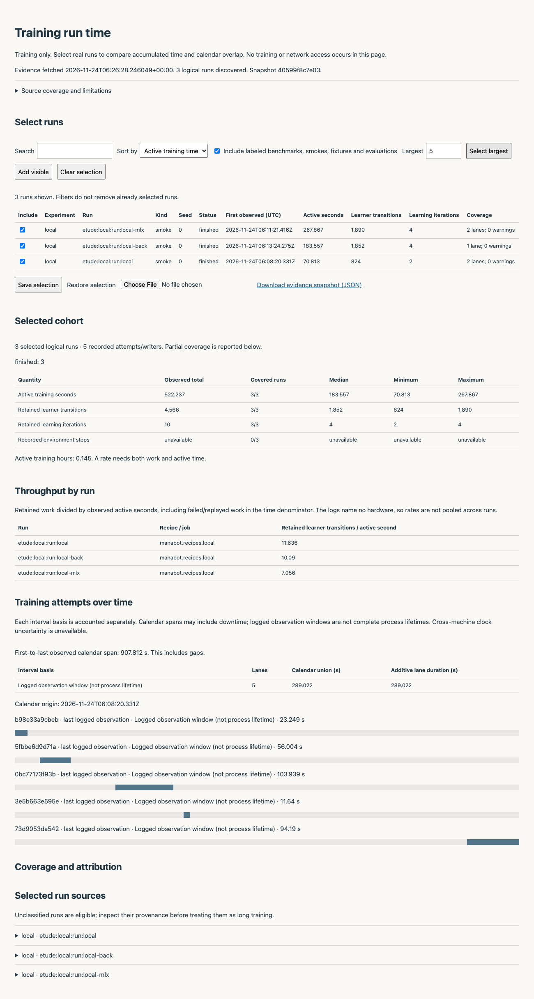

All runs: manabot/recipes/local.py through .venv/bin/etude, ETUDE_HOME under .runs/qa/, M-series Mac, release extension built after the main merge.
| Scenario | What I did | What I saw |
|---|---|---|
| Fresh Torch run | etude train … --until updates=1 | Exit 0; save holds state.json, continuation.json, learner.safetensors (schema canonical-v1, float32, torch:cpu, 509 tensors), sampling.safetensors. Readable with plain JSON + header parsing. |
| Same-backend resume | --resume --until updates=2 | Exit 0, new save. |
| Switch backend via CLI | --resume --config '{"backend":"mlx",…}'; etude continue --run local | Refused: run_identity_conflict; continue: "the launcher has no run 'local'". Local runs cannot switch backend from the CLI (Etude; docs say continue is for launched runs). |
| Torch → MLX (emulated continued child) | Copied parent out/ into a new experiment, trained with MLX/MPS to update 3 | Exit 0; update 3 logged run/sampling_reseeded=1, run/adam_steps_aligned=17; save domain mlx. |
| MLX → Torch | Same, back to Torch CPU to update 4 | Exit 0; reseed logged at update 4, no alignment; domain torch:cpu. |
| MLX resume with Torch blocked | PYTHONPATH with a raising torch, --resume --until updates=4 | Exit 0. |
| Ctrl-C and resume vs uninterrupted | pty Ctrl-C after update 2 (exit 75), --resume; second home ran uninterrupted | 00000004 raw and EMA: all 138 tensors byte-identical; only bc.counts.training_seconds differs. |
| Returning user: legacy save from main | main worktree wrote learner.pt/optimizer.pt/ema.pt; tried MLX, then Torch resume, then MLX on a copy | MLX: "learner.pt: this save was written by Torch object registration; resume once on Torch to write a portable save". Torch resume rewrote it as the four-file layout; MLX then continued, logging reseed and 17 aligned clocks. |
| Damaged save | Edited a seed in continuation.json, --resume --until updates=5 | Refused, out/ byte-identical. Message was learner.safetensors: incompatible continuation_sha256 — fixed to "continuation.json differs from the continuation_sha256 that learner.safetensors recorded; the save is damaged or mixed"; other header mismatches now name saved and current values. |
| Training report | manabot training-report over the parent and both children, Select largest | Numeric active seconds and transitions/second for all three; screenshot below. |

Works: fresh, resume, Ctrl-C exactness on CPU, Torch↔MLX both ways, Torch-free MLX resume, legacy Torch migration, damage refusal, report.
Not reached: a real etude continue on a launched run (needs a rental and pool with the target backend); CUDA↔MPS/CPU Torch domain switches (no GPU here).
Still rough, worst first: (1) a person with a local etude train run has no CLI path to switch backend — only launched runs via etude continue, which queues in the parent's pool, so "train on CUDA, finish on this Mac" also lacks a direct route; that's an Etude feature. (2) run_identity_conflict suggests --experiment NAME, which starts a fresh run rather than continuing.